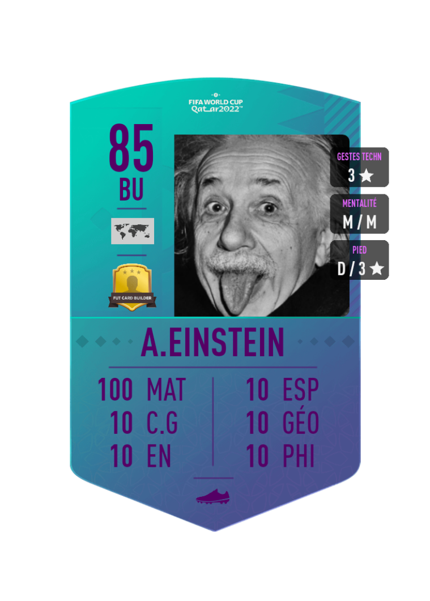
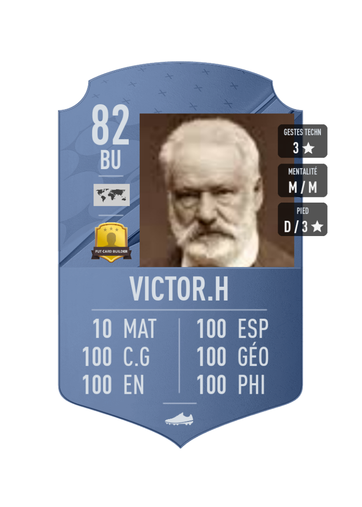

L'importance de construire sa propre stratégie
"Failing to plan is planning to fail" Winston Churchill
Même en ayant les bonnes méthodes, il faut que tu saches où tu veux aller et surtout comment y'aller (tu auras beau avoir une ferrari, si tu ne sais pas où tu veux partir avec , tu n'iras pas bien loin...). Par expérience, la plupart des étudiants se tournent vers leurs profs de prépa pour répondre à cette question. Si tu en fais partie, je te conseille de faire très très (très) attention. Comme on le verra dans la suite, la stratégie est une affaire personnelle. Tu dois analyser tes points forts, tes points faibles, tes objectifs ,le temps qui reste , la quantité de travail que tu es prêt à fournir,ton évolution... plusieurs paramètres que tes profs (pour la plupart) n'ont pas. Un prof en prépa, bien qu'experimenté, a très peu de connaissances te concernant. Tout ce qu'il sait de toi , c'est les D.S que tu lui rends à un moment X, contrairement à toi qui te connait par coeur et suit ton parcours du début jusqu'à la fin. Il ne saura donc jamais mieux que toi ce qu'il faut faire et c'est pour cette raison que je te déconseille fortement de prendre leurs mots à la lettre. Je rajoute aussi que certains profs sont assez "faux" dans ce qu'ils te disent. Très peu d'entre eux te diront de privilégier leur matière par rapport à d'autres , même si le besoin se fait ressentir. On se retrouve alors avec des étudiants qui travaillent équitablement chaque matière. Et dans une filière où les maths sont coefficients 11 et la LV2 coefficient 2, ça serait une grosse erreur de calcul de leur donner le même temps de travail. Pourtant c'est ce que certains profs t'encourageront à faire pour éviter que tu ne fasses autre chose dans leurs cours. Mais bon ,tout ça pour te dire que laisser ton sort entre les mains des profs est une stratégie très risquée, je te recommande ainsi de lire la suite et de commencer à construire ta propre stratégie qui te permettra de tout exploser le jour J.
1-Connaitre les règles du jeu:
Je me rappelle encore de mon premier concours blanc... pas une note au dessus de la moyenne mais un 14 en maths qui m'a value d'être dans le top 10 de ma classe. J'attirais alors l'irritation de certains de mes camarades qui même en ayant eu des notes corrects dans tout le reste (16 en géopo, 14 en philo...) finissait derrière à cause d'une note assez basse en maths, ce qu'il trouvait naturellement injuste. Mais ce n'était pas injuste, c'était tout simplement les règles du jeu. Tout comme dans un jeu d'échec, tu ne peux pas gagner si tu ne connais pas les règles. Dans cette partie, il y'en a 3 qu'il faut que tu connaisses à tout prix. Tout d'abord, les coefficients: ce sont eux qui déterminent presque entièrement les règles. Tu sais donc ce qui va te ramener le plus de points et ce qui va t'en rapporter que très peu et tu dois dès lors agir en conséquence.
La deuxième règle du jeu est l'aléa. Pas toutes les matières récompenseront ton travail de la même manière, certaines matières sont beaucoup plus assujettis à l'aléa que d'autres. Naturellement tu chercheras à sécuriser les matières où la part d'aléa est la plus faible. De manière générale, il faut de demander dans quelles matières, le travail fourni sera le plus rentable. Plus la part d'aléa est grande , moins il y'a de chances que ton travail le soit.
Enfin, la dernière règle du jeu est le temps. Tu as un temps imparti qui est le jour des concours. Tu dois donc garder à l'esprit que ton temps n'est pas infini et que tu dois l'utiliser stratégiquement pour être prêt le jour J.
2-Analyser la situation
Maintenant que tu connais bien les règles du jeu, il te faut ensuite faire un état des lieux. Plus tu décris précisement la situation dans laquelle tu te trouves mieux ce sera. Alors sans perdre de temps prends un feuille ou ouvre un fichier world et dessine un tableau subidivisé en 3 parties: Dans la première tu mettras les matières où tu es le plus "faible" et où tu te sens le moins confiant (ça sera généralement les matières où tu te situes dans le dernier quart de ta classe). Ensuite tu mettras celle où tu es dans la moyenne (entre le dernier et le premier quart). Enfin les matières où tu te situes dans le premier quart (N'aie pas peur si y'en a aucune pour l'instant, c'est tout l'interet de faire tout ça).
En haut du tableau , tu mettras le temps qu'il te reste avant les concours. C'est un parametre capital à ne pas négliger. C'est à partir de là que tu orienteras ta stratégie (si il te reste 1 an pour devenir chaud en maths , ce n'es pas la même chose que s'il te reste 1 semaine...).
Enfin tu mettras juste en dessous du temps, l'école visée et la barre d'admission aux concours.
Voilà un exemple d'état des lieux pour un étudiant en maths approfondi qui viserait l'ESSEC.
3-Phase d'introspection: connaître ses points forts et ses points faibles
Dans quelles matières, tu te sens le plus à l'aise où tu sens que la marge de progression sera la plus grande? Ce n'est pas forcément les matières où tu as les meilleures notes mais plutôt celle où tu penses que tu peux facilement progresser si tu t'y mets sérieusement. Cette question n'est pas anodine, car c'est autour de ces matières que tu devras construire ta stratégie (on verra plus en détail comment dans la section suivante). Dans mon expérience, j'ai pu identifié 3 profils majeurs en prépa ECS:
Une machine en maths mais faible dans tous le reste

Faible en maths mais une machine dans tous le reste

Le joueur bon ou moyen partout, sans réel point fort.
Biensûr, il y a une multitude de profils possible mais par soucis de longueur et de clarté , je ne m'occuperais que de ces 3 là. N'hésite pas à prendre celui qui te correspond le plus.
3-Mettre en place des priorités
Tu possèdes dans ton tableau toutes les informations qu'il te faut pour construire ta stratégie. Ta première étape sera d'établir des priorités. Tu surligneras en rouge, les 2 matières avec les plus hauts coefficients pour intégrer ton école,en jaune , ceux avec les plus bas et en orange entre les 2 (Le code couleur t'aidera à voir ce qui est vraiment important). Ensuite , à côté des coefficients , tu mettras entre parenthèse (selon toi) la part d'aléa qu'il y'a dans cette matière en pourcentage. Ainsi tes priorités seront les matières à plus gros coefs et à faible aléa et à l'inverse les matières auxquelles tu dois accorder le moins de temps sont celles à faible coefficients et à fort aléa. Comme les coefficients varient énormément d'une école à l'autre , je ne pourrais te dire quelles sont les matières que tu dois privilégier mais si tu vises une parisienne où une école du top 5 et que tu es en maths approfondis, voici mes recommandations:
Le profil scientifique: ta priorité sera de faire des maths la base forte de ta stratégie. Tu devras t'assurer une excellente note en maths aux concours (au moins 16). La deuxième priorité sera de choisir une deuxième matière dans laquelle tu sens que tu peux progresser et tu pourras presque aussi bien performer que les maths (de préférence la géopo où les langues). Enfin tu dois t'assurer de minimiser la casse dans les matières restantes,ton but final devrait ressembler à quelquechose comme ça.
Le profil littéraire: Ce profil est assez risqué , car ses matières fortes sont des matières à grand aléa. De plus, si tu veux avoir une parisienne sans devoir tout casser en maths, il te faudra t'assurer d'excellentes notes dans TOUTES les autres matières. Or si tombes sur un sujet qui ne t'inspire pas trop en géopo ou que tu as une mauvaise surprise en philo, tu pourras dire adieu à ta parisienne. Pour éviter de prendre de gros risques comme celui-ci, je te recommande de faire des maths ta priorité n°1. Ton objectif sera de minimiser la casse en maths(minimum 10/20 aux concours), voire de t'en sortir avec une bonne note. Tandis que ta 2ème priorité sera de garder le même niveau dans les autres matières. Ce n'est pas grave si tu régresses un peu dans ces matières, ça sera beaucoup plus simple à rattraper pendant tes mois de préparation pour les concours que de devoir te construire un bon niveau en maths pendant cette période. Ton objectif final devrait ressembler à ça:
Dans tous les cas je te conseille de simuler tes notes aux concours (n'hésite pas à aller sur coeffexpress pour le faire ) en fonction du profil que tu as. Tu verras les notes qu'il te faudra pour intégrer l'école souhaitée (PS:Prend une marge de sécurité d'au moins 1/2 point, viser la barre d'admissibilité pile poile est assez risqué).
4-Réadapter sa stratégie tout au long de l'année.
Maintenant que tu sais quelle école tu veux et comment l'avoir ,tu as tous les outils en main pour pouvoir commencer ta quête de la meilleure des façons possible. Toutefois ta stratégie n'est pas un saint graal, bien au contraire. Toute l'année tu devras l'adapter et la réadapter à tes progrés et ta situation. Il se peut d'ailleurs que tes camarades où tes profs t'expriment ouvertement leur scepticisme quant à ta stratégie (laisser des matières pour en privilégier d'autres n'est pas bien accueilli dans certaines prépas). Je te déconseille fortement de changer ta stratégie à partir de ce qu'ils disent. Biensûr si c'est des conseils pour améliorer ta stratégie , n'hésite pas à les prendre. Mais si c'est seulement des tentatives pour t'effrayer et de dissuader de privilégier certaines matières à d'autres, alors dans ce cas il vaut mieux se boucher les oreilles. L'aventage d'avoir établie une stratégie, c'est que tu as réfléchi rationnellement à ce qui était le mieux pour toi. Si ces derniers s'amusent à jouer sur les sentiments en exagérant les conséquences "dramatiques" de ne pas accorder d'importance à une matière alors n'y fait pas attention. Les seuls arguments que je te recommande de prendre c'est les notes que tu auras au fil de l'année. Elles seules pouront t'aiguiller sur l'efficacité de ta stratégie. Enfin, toute stratégie nécessite du temps, ce n'est pas en l'appliquant 1 semaine et en n'ayant pas de résultats derrière que ça veut dire que la stratégie ne fonctionne pas. Je te conseille donc de lui laisser du temps (au moins 3 mois) avant de pouvoir commencer à la modifier. (Encore une fois , tout ce que j'ai dis est relative au temps qu'il te reste pour les concours, ici je suis parti du principe qu'il te reste à minima 1 an pour les concours,s'il te reste moins de quelques mois, je te déconseille fortement de changer ta stratégie en cours de route). La pire chose à faire est de s'emmêler les pinceaux et de changer de stratégie trop rapidement, ça ne fera que te déstabiliser mentalement (burn out) et empirer la situation. Une stratégie doit être mené sur le long terme, d'où l'importance de prendre du temps pour la faire.
Désormais tu possèdes un mental de guerrier, ainsi qu'une stratégie en béton pour les concours, il ne te reste plus qu'à te mettre au charbon. Dans la prochaine partie je te livre toutes les méthodes qui m'ont aidé à progresser sensiblement. N'hésite pas à t'en inspirer!